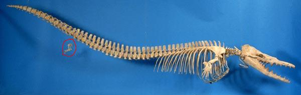
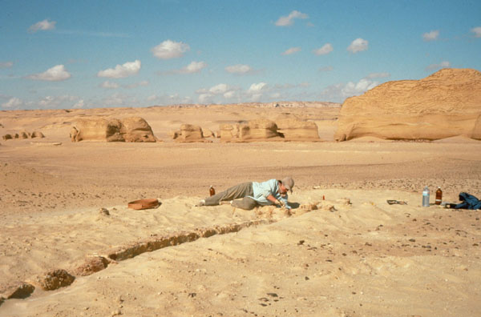
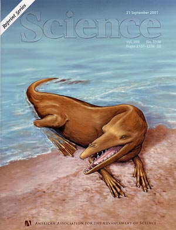

For every fossil found, a thousand may be missing to give us a
complete
picture of life on Earth. But Darwin's basic concept of
natural
selection is confirmed almost daily by paleontologists, as more and
more so-called missing links are found. Recent work by
paleontologists Philip Gingerich has provided substantial evidence
for
the amazing scenario of whale evolution from an antelope-like
land creature to the sea creatures we know today.

A complete
skeleton
of Dorudon atrox excavated in Wadi Hitan, Egypt. Note
the
retention of vestigial
characteristics -- hind limbs, feet, and toes (red circle).

A paleontologist
carefully excavating and extinct transitional whale, Basilosaurus
isis, Wadi
Hitan, Egypt.

An artist conception of another transitional creature:
Rodhocetus
balochistanensis
For more details on these
pictures and
the work of Philip Gingerich, an expert on whale evolution,
see Gingerich's
Web
Page